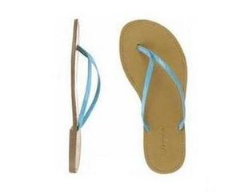

Verano
 De: La Frikipedia, la enciclopedia extremadamente seria.
De: La Frikipedia, la enciclopedia extremadamente seria.

|
ATENCIÓN
Este artículo es una herejía. Su autor debería ser quemado en la hoguera para purificar su alma. Ha leido poco la Frikipedia y ha soltado una sarta de chorradas sin sentido. Alguien debe corregir el artículo para que no entre en confrontación con el saber frikipédico.
|

Ejemplo de como el calor del verano implica ver ano aunque no siempre tiene que ser agradable
No confundir con "ver ano" porque ni todos los veranos se ven anos ni siempre que ves ano es verano. Aunque la poca ropa, las faldas cinturón y el sexo eventual en la playa (normalmente el que hacen otros y no tú) puede ayudar a que se esta situación.
Esta estación del año es muy querida (excepto por los muertos por el tema de la descomposición y eso), porque por fín podemos hacer al aire libre, algo que llevamos haciendo durante todo el año encerrados. Esto es, tomarnos unas cervezas con unas tapitas en la terraza de un bar.
El verano es conocido por todos principalmente por:
- Verano azul: serie que narra las venturas y desventuras de unos jovenes activistas de green peace que luchaban contra la extinción del chanquete. Misión que finalmente tuvieron que dar por perdida.
- La canción de verano: el problema más grave de la humanidad del siglo XX y XXI. La cabeza de los mayores genios de estos siglos se quedaron totalmente en blanco tras escucharlas. Además de obligar a los que consiguieron escapar de ella a encerrarse en un agujero hasta que pasara esta época, pues esta canción la ponen hasta en los entierros. Llega el verano, y con él, la canción del verano. Este año se baila sobre todo el LarvaDance, arrebatador éxito de Crisálidas Mustias. Otros hits representativos: Cuando me llamas por mi nombre me desvanezco en secreto pero tú no lo notas porque eres medio imbécil, de Médula Medulopóulos;
- El estribillo, de Vomita Bonita, canción sin estrofas pero con talento creativo; El baile del tira-tira, de los monógamos Dani Dolby y Pletina Surround o la emodestructiva balada No me canso, tema de 756 minutos de duración con veintitrés falsos finales orquestales y un enjambre de gaitas perdiéndose en espiral hacia el infinito. Su creador e intérprete, Michel LeRepeloüs, fallece después de ejecutar el bis que le ha solicitado la audiencia al final de su primer concierto en directo. Todos sus órganos, incluido el hammond, son donados a la Ciencia. La Ciencia los rechaza y son encapsulados y enviados al espacio exterior en una ceremonia simple y austera.
Historia
 Aunque juraste que nunca maltratarías tus pies con este invento del diablo, ahora o te cueces los pies llevando botas o cedes a la tortura
El verano fue inventado en el año 1965 por los llamados actualmente "socorristas" (su primer nombre fue "maogo", que significa "lector de revistas bajo la sombrilla"). Una serie de jóvenes estudiantes que buscaban la forma de ganar dinero trabajando sólo tres meses al año para poder pagarse la "fiestuqui" durante el resto del año.
En un primer momento, la época del año destinado al verano fueron los meses de enero, febrero y mayo. Pero las personas más o menos normales, se resistían a meterse dentro de los bloques de hielo. Además no tenía mucho sentido dejar dos meses entre febrero y mayo. Pero ya se sabe que "marzo ventoso y abril lluvioso...". Esto imposibilitaba mantener las revistas en la mano y secas. Por este motivo se pensó en mayo como tercer mes.
Finalmente se llegó a la conclusión de que junio, julio y agosto eran los meses más propicios para el verano. No sólo porque la buenas temperaturas eran mejor para bañarse en la piscina (murieron 300 millones de personas sólo en España antes de descubrirlo), sino porque durante estos meses eran las vacaciones en los colegios.
Puede que a primera vista parezca un poco estúpido tardar tanto en llegar a una conclusión tan evidente, pero hay que tener en cuenta que durante el 1965 d.c, la humanidad se encontraba aún en la edad de piedra. Por supuesto, si la inteligencia aún no llega para hacer cucharas de metal, menos aún para pensar en la mejor época para el verano.
Varios años después, concretamente dos, el verano se dividió en cuatro estaciones del año y pasaría así a llamarse Examenes II, Playa, Depresiones y Examenes III.
Pre-Historia
Acabo de decir que el verano fue inventado en el 1965. Por tanto el verano no existía en la prehistoria. ¿Qué esperabas encontrar aquí?.
Verano, La mejor época del año
Sin duda alguna, el verano es la mejor de la 8 estaciones del año. Podéis preguntárselo a cualquiera, por ejemplo a mi o a mi hermano. Y si así lo hacéis, os diremos que sin duda alguna, el verano es la mejor de las 8 estaciones de año.
Motivos:
- Hay un 80% de posibilidades (según estudios estadísticos) de que tu vacaciones sean en verano.
- No hace frío a no ser que si lo haga.
- En verano no hay navidades (Excepto en Argentina
que vendría a ser el único país importante en el hemisferio sur)
- Hace calor, lo implica que no hace frío.
- En verano no hay renos porque emigran al polo norte con Papá Noel.
- Las altas temperaturas impiden el frío.
- Los días son más largos, de aproximadamente 48 horas, o por lo menos es el tiempo que tardas en volver a casa si te vas fiesta.
- En verano no hace frío.
- Existe un 99,9% (siempre según estudios estadísticos en los que hay un 0,5% de probabilidades de que acierten) de encontrar atascos en la carretera. Y todos sabemos que no hay nada más bonito en la vida que un atasco.
- Según los estudios estadísticos, en verano existe un 90% de posibilidades de que no haga frío.
- Si te quedas en Madrid puedes aparcar a no ser que justo ese año todo hayan decidido quedarse en Madrid porque se puede aparcar.
- Y por último, aunque no por ello menos importante, el veráno es la estación del año en la que menos frío hace.
Demostración de porque el verano es la mejor estación
Premisas:
- a: beber cerveza.
- b: sed.
- c: malo.
- d: en verano se bebe cerveza.
- e: quitar la sed.
- f: la cerveza evita el cáncer y los infartos.
- g: es bueno para salud.
- h: es bueno para la vida en general.
- i: verano.
Demostración lógica:
- b => c (la sed es mala)
- a => e (beber cerveza quita la sed)
- luego e => ¬c (quitar las sed implica algo no malo)
- como a implica a e y e a ¬c deducimos que
- a <=> ¬c (beber cerveza implica algo no malo)
- ¬c ^ f <=> g (si y solo si no malo y la cerveza evita el cáncer y los infartos implica que la cerveza es buena para la salud)
- g <=> h (si y solo si es bueno para la salud, es bueno para la vida en general)
- sustituyendo ¬c por a y g por h y eliminando f porque es redundante
- a <=> h (beber cerveza es bueno para la vida en general)
- d => i <=> h (como en verano se bebe cerveza, el verano es bueno para la vida en general)
Autor(es):
- Krusher
- Nexo
- Fordus
- Doctor grijander
- Frikiman
- Aque
- Latiosu
- Dark temptation
- Bryan
- Burtoneitor
Frikipedia 2005-2016, Licencia
GFDL 1.2 - Extraído por FrikiLeaks